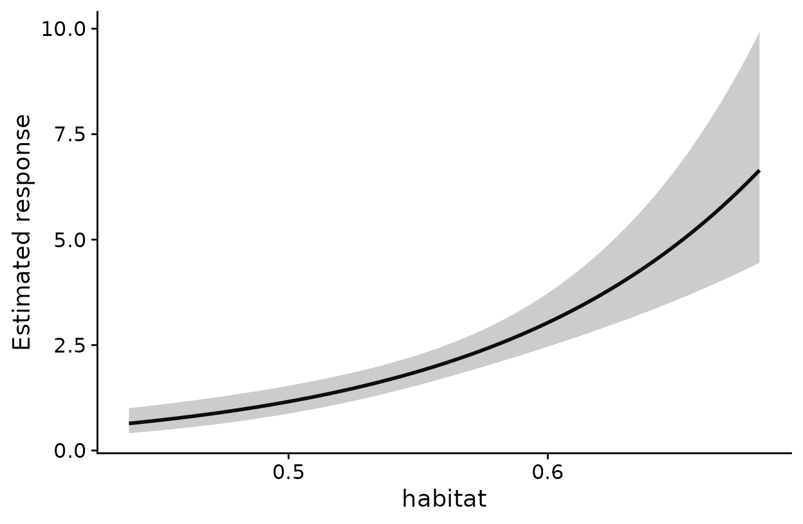
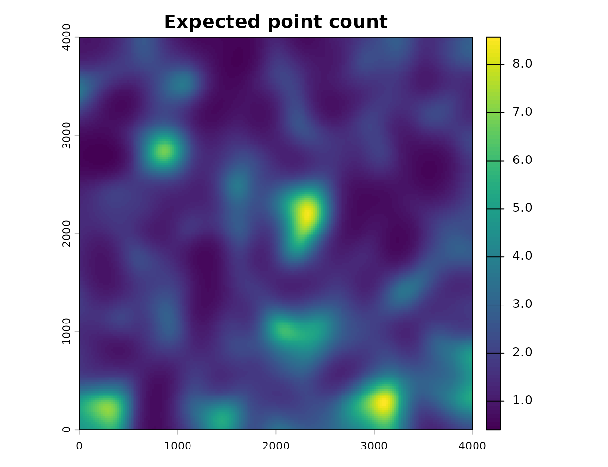

16. Combine Data Sets to Estimate a Shared Scale of Effect
Bill Peterman
Source:vignettes/v16-joint-data-sets.Rmd
v16-joint-data-sets.RmdWhat this vignette covers
Many studies gather more than one kind of data on the same landscape: point counts at some sites, detection and nondetection surveys at others, acoustic recorders or cameras somewhere else. Each data set can estimate the scale of effect on its own, but small or binary data sets often estimate it poorly. Analyzed together, they can estimate a shared scale more precisely, and they can show whether the scale really differs among them.
multiScale_joint() combines data sets that you have
already fitted with multiScale_optim(). Each data set keeps
its own response, model class, and coefficients. The joint fit ties
together only what you choose: the scale of effect of each landscape
covariate and, if you wish, its regression coefficient. This vignette
works through one simulated example with three surveys and shows how
to
- estimate one scale of effect from two surveys and read the output,
- test whether a common scale is supported,
- allow for surveys that revisit the same sites,
- share a landscape coefficient between surveys,
- account for a survey that measures its response over an area rather than at a point, and
- use the fitted model for plots and maps.
Read vignette("v01-quickstart", package = "multiScaleR")
first. vignette("v02-user-guide", package = "multiScaleR")
explains profile likelihood intervals and model selection with AIC, and
vignette("v09-estimates-and-intervals", package = "multiScaleR")
explains what each interval includes.
Experimental.
multiScale_joint()andfootprint_sd()are new. Their arguments and results may change in a later release without a deprecation period.
How a joint fit works
For any candidate scale of effect, multiScale_optim()
smooths the landscape at that scale, refits your model, and records its
maximized log-likelihood. multiScale_joint() does the same
refit for every data set and adds the log-likelihoods. It then searches
for the scales that maximize this sum. The joint log-likelihood
is therefore the sum of the data sets’ own log-likelihoods, each
maximized over that data set’s own coefficients.
Adding log-likelihoods treats the data sets as independent pieces of evidence once the landscape covariates are accounted for. Section 6 shows how to check this when surveys share sites.
The scales argument sets what the data sets share.
scales = |
What the data sets share | Use it when |
|---|---|---|
"common" |
One scale for each landscape covariate | Every survey measures its response at a point and should respond to the landscape over the same distance |
"separate" |
Nothing. Each data set has its own scale | As the reference model. It reproduces the separate fits |
"footprint" |
One ecological scale, seen through each survey’s sampling footprint | Some surveys measure the response over an area, such as the detection radius of a recorder |
"footprint_scaled" |
As "footprint", with every footprint
multiplied by an estimated factor kappa
|
The footprint sizes are uncertain |
Two further arguments extend the model. share names
landscape covariates whose regression coefficient is also shared, and
cluster identifies sites that more than one survey
visited.
Simulate three surveys of one landscape
The example uses one continuous habitat layer on a landscape 4 km on a side. The true ecological scale of effect (the scale at which the landscape affects the animals) is a Gaussian kernel with sigma = 150 m. Three surveys sample this landscape:
- Point counts at 60 sites record the number of individuals, a Poisson count.
- Presence and absence at 80 sites records whether at least one individual is present. Forty of these sites are count sites visited a second time.
- Acoustic recorders at 40 sites count calls detected within 300 m. Each recorder therefore summarizes a disk of landscape rather than a point.
Revisited sites also share an unmeasured site effect, a local influence on abundance that the habitat raster does not capture. That is common in real surveys and matters in Section 6.
# A continuous habitat layer: 200 x 200 cells of 20 m
rs <- sim_rast(dim = 200, resolution = 20, user_seed = 2024)
habitat <- rs[["cont1"]]
names(habitat) <- "habitat"
# sim_rast() returns no coordinate reference system. A projected CRS makes
# the map units meters and lets kernel_scale.raster() match buffers later.
crs(habitat) <- "EPSG:32617"
max_D <- 800 # buffer radius, in meters, for every survey
sigma_true <- 150 # ecological scale of effect, in meters
# The recorders detect calls within 300 m. footprint_sd() turns that disk
# into a standard deviation, and the landscape a recorder sees is smoothed
# at the larger apparent scale sqrt(sigma^2 + footprint^2).
tau_acoustic <- footprint_sd("disk", 300)
sigma_acoustic <- sqrt(sigma_true^2 + tau_acoustic^2)
c(footprint = tau_acoustic, apparent = sigma_acoustic)
#> footprint apparent
#> 150.000 212.132
# Survey locations at least max_D + 50 m from the raster edge
random_points <- function(n) {
xy <- data.frame(x = runif(n, 850, 3150), y = runif(n, 850, 3150))
vect(xy, geom = c("x", "y"), crs = "EPSG:32617")
}
# Habitat smoothed at scale `sigma` around each point, standardized across
# points. kernel_prep() returns it in kernel_dat when given `sigma`.
smoothed_at <- function(pts, sigma) {
kernel_prep(pts, habitat, max_D = max_D, kernel = "gaussian", sigma = sigma,
verbose = FALSE)$kernel_dat$habitat
}
set.seed(4)
count_pts <- random_points(60)
presence_pts <- rbind(count_pts[1:40], random_points(40)) # 40 revisited sites
acoustic_pts <- random_points(40)
count_pts$site <- paste0("site", 1:60)
presence_pts$site <- c(count_pts$site[1:40], paste0("site", 61:100))
# Unmeasured site effects, shared by both surveys at a revisited site
site_effect <- setNames(rnorm(100, mean = 0, sd = 0.4), paste0("site", 1:100))
# Log expected abundance rises by 0.6 per standard deviation of habitat
count_pts$count <- rpois(60, exp(0.5 + 0.6 * smoothed_at(count_pts, sigma_true) +
site_effect[count_pts$site]))
# Present when at least one individual is there
presence_pts$present <- as.integer(
rpois(80, exp(-0.3 + 0.6 * smoothed_at(presence_pts, sigma_true) +
site_effect[presence_pts$site])) > 0)
# Calls respond to habitat at the recorders' apparent scale
acoustic_pts$calls <- rpois(40, exp(1.5 + 0.6 * smoothed_at(acoustic_pts, sigma_acoustic)))How the presence data relate to the counts: if the number of individuals at a site is Poisson with mean lambda, the probability that at least one is present is 1 - exp(-lambda). The complementary log-log (cloglog) link inverts this relation, so cloglog(p) = log(lambda). A binomial model with a cloglog link therefore estimates the same habitat coefficient, on the same scale, as a Poisson model of the counts. Section 7 uses this to share the coefficient.
Fit each survey alone
Prepare kernel inputs for each survey with the same raster, and fit
each model with multiScale_optim() as in the Quick Start.
multiScale_joint() matches landscape covariates across data
sets by name, so the layer must have the same name
(habitat) in every kernel_prep() call.
prep <- function(pts) {
kernel_prep(pts, habitat, max_D = max_D, kernel = "gaussian", verbose = FALSE)
}
in_count <- prep(count_pts)
in_presence <- prep(presence_pts)
in_acoustic <- prep(acoustic_pts)
dat_count <- data.frame(count = count_pts$count, site = count_pts$site,
in_count$kernel_dat)
dat_presence <- data.frame(present = presence_pts$present, site = presence_pts$site,
in_presence$kernel_dat)
dat_acoustic <- data.frame(calls = acoustic_pts$calls, in_acoustic$kernel_dat)
fit_count <- multiScale_optim(
glm(count ~ habitat, family = poisson, data = dat_count),
in_count, verbose = FALSE)
fit_presence <- multiScale_optim(
glm(present ~ habitat, family = binomial(link = "cloglog"), data = dat_presence),
in_presence, verbose = FALSE)
fit_acoustic <- multiScale_optim(
glm(calls ~ habitat, family = poisson, data = dat_acoustic),
in_acoustic, verbose = FALSE)
# Sigma and its standard error from each survey, in meters
alone <- list(counts = fit_count, presence = fit_presence, acoustic = fit_acoustic)
data.frame(sigma = sapply(alone, function(f) f$scale_est$Mean),
SE = sapply(alone, function(f) f$scale_est$SE),
n = sapply(alone, function(f) nobs(f$opt_mod)))
#> sigma SE n
#> counts 127.6503 25.16474 60
#> presence 129.2601 34.45105 80
#> acoustic 232.8066 26.28108 40How to read the output: each row is one survey analyzed alone. The point counts and the presence data both estimate sigma near 128 m, below the true 150 m but well within two standard errors of it. The presence data are binary and carry less information per site, so their standard error is larger despite more sites. The acoustic estimate is much larger, about 233 m. That is not a different ecological scale: each recorder averages the landscape over its 300 m detection radius, which inflates the scale it appears to respond to (Section 8). The first two surveys measure their response at a point, so Sections 5 to 7 combine them, and Section 8 adds the recorders.
Estimate a common scale
Pass the separate fits as a named list. The names identify the data sets in the output.
common <- multiScale_joint(list(counts = fit_count, presence = fit_presence),
scales = "common", verbose = FALSE)
common
#>
#> Joint scale-of-effect fit (experimental)
#> Data sets: counts (glm, n = 60); presence (glm, n = 80)
#> Kernel: gaussian
#>
#> Scale structure
#> covariate structure data_sets shared_coefficient
#> habitat common counts, presence FALSE
#>
#> Joint parameters (scales in map units)
#> parameter estimate SE 95% lower (profile) 95% upper (profile)
#> sigma:habitat 128.2 20.34 91.72 175.2
#>
#> Apparent scale in each data set
#> data_set covariate sigma SE 95% lower (profile) 95% upper (profile)
#> counts habitat 128.2 20.34 91.72 175.2
#> presence habitat 128.2 20.34 91.72 175.2
#>
#> logLik = -149.374 (df = 5), AIC = 308.748, n = 140
#> Against separate scales: LR chi-square = 0.001428, df = 1, p = 0.97
#>
#> Note: Standard errors assume the data sets are independent given the covariates.How to read the output:
- Data sets lists each survey, its model class, and its number of observations.
-
Scale structure shows how each landscape covariate
is tied across data sets. Here
habitathas one common scale used by both surveys. -
Joint parameters are the estimated parameters.
sigma:habitatis the common scale of effect in map units (meters here), with its standard error and 95% profile-likelihood limits. A profile-likelihood interval contains every value of sigma whose joint log-likelihood lies within the chi-square cutoff of the maximum, so it can be asymmetric, as scale intervals usually are. - Apparent scale in each data set gives the scale each survey sees. With a common scale, every survey sees the same value.
-
logLik, df, AIC, n describe the whole joint model.
dfcounts every estimated parameter: two native coefficients per survey (intercept and habitat slope) plus the shared scale, so 5. - Against separate scales is the likelihood-ratio test of this model against one scale per survey (Section 5.1).
- The closing note repeats the assumption behind the standard errors.
The joint estimate, 128 m, has a standard error of 20 m, smaller than either survey achieved alone. Pooling the surveys adds information about the one quantity they share.
To express sigma as a distance, use kernel_dist() on a
component fit (Section 9 describes the components):
kernel_dist(common$fits$counts) # radius holding 90% of the kernel weight
#> Mean 2.5% 97.5%
#> habitat 275.14 187.78 362.5A Gaussian kernel with this sigma places 90% of its weight within about 275 m of a survey point.
Is a common scale supported?
Fit the separate-scales model and compare the two. With
scales = "separate" the joint fit reproduces the separate
fits, so it is the natural reference.
separate <- multiScale_joint(list(counts = fit_count, presence = fit_presence),
scales = "separate", profile = FALSE, verbose = FALSE)
anova(common, separate)
#> Likelihood-ratio tests between joint fits (valid only for nested structures)
#>
#> df logLik AIC LR df_difference p_value
#> habitat=common 5 -149.37 308.75
#> habitat=separate 6 -149.37 310.75 0.0014279 1 0.96986
AIC(common, separate)
#> df AIC
#> common 5 308.7479
#> separate 6 310.7465How to read the output: anova() reports
the likelihood-ratio statistic LR, the number of extra
parameters in the larger model (df_difference), and the
p-value. A small p-value is evidence that the scales differ. Here the
two log-likelihoods are almost equal, and the common scale has one fewer
parameter, so it has the lower AIC. Models within 2 AIC units of the
best have comparable support, and among such models the simpler one is
usually preferred.
Keep in mind that this test has little power with two or three data sets. A nonsignificant result means the data do not show a difference, not that the scales are equal. When the surveys could plausibly respond at different scales, report both fits or the comparison, not the common scale alone.
Surveys that share sites
Forty sites appear in both surveys, and the simulation gave them
shared site effects. Shared effects make the two surveys agree more at
those sites than independent data would, so standard errors that assume
independence are too small. Supply cluster to measure the
dependence. It names a column present in every model’s data (here
site), or it is a named list with one vector of identifiers
per data set.
common_sites <- multiScale_joint(list(counts = fit_count, presence = fit_presence),
scales = "common", cluster = "site",
profile = FALSE, verbose = FALSE)
common_sites$residual_correlation
#> data_set_1 data_set_2 shared_clusters spearman
#> 1 counts presence 40 0.3846154How to read the output: shared_clusters
is the number of sites both surveys visited, and spearman
is the rank correlation of the two surveys’ mean standardized residuals
at those sites. Values near 0 support the independence assumption. A
clearly positive value, here 0.38 over 40 sites, means the surveys share
unexplained site effects. Then use the jackknife, which deletes
one group of sites at a time, refits the joint model, and measures how
much the estimate moves. Because deleting a site removes it from every
survey at once, the jackknife allows for dependence between surveys at a
site.
common_jack <- multiScale_joint(list(counts = fit_count, presence = fit_presence),
scales = "common", cluster = "site",
uncertainty = "jackknife", groups = 10, seed = 1,
profile = FALSE, verbose = FALSE)
rbind(hessian = common_sites$parameters[, c("estimate", "SE", "wald_lower", "wald_upper")],
jackknife = common_jack$parameters[, c("estimate", "SE", "wald_lower", "wald_upper")])
#> estimate SE wald_lower wald_upper
#> hessian 128.2134 20.33685 93.95466 174.9640
#> jackknife 128.2134 17.18574 94.67752 173.6282How to read the output: both rows share the same
estimate and differ only in the standard error. The Hessian standard
error assumes the surveys are independent, and the jackknife standard
error does not. Here the jackknife gives 17 m against 20 m from the
Hessian, so in this example the shared site effects do not noticeably
widen the interval for the scale. A jackknife from 10 groups is itself
an estimate with 9 degrees of freedom, and its Wald interval uses a t
distribution with those degrees of freedom. groups sets how
many groups of sites are deleted in turn, and 10 to 20 groups is a
practical range. When the residual correlation is clearly positive,
report the jackknife interval, because it does not rely on independence.
Profile-likelihood limits come from the likelihood itself and assume
independence.
Share a landscape coefficient
The counts and the presence data arise from the same abundance, so
they should share the habitat coefficient as well as the scale. The
cloglog link of the presence model puts its coefficient on the
log-abundance scale of the count model (Section 3). Name the covariate
in share:
shared <- multiScale_joint(list(counts = fit_count, presence = fit_presence),
scales = "common", share = "habitat", verbose = FALSE)
shared$parameters[, c("parameter", "estimate", "SE", "profile_lower", "profile_upper")]
#> parameter estimate SE profile_lower profile_upper
#> 1 sigma:habitat 128.2550323 20.93850289 90.9251798 176.8475205
#> 2 beta:habitat 0.5488422 0.07665923 0.3979202 0.6987813
AIC(common, shared)
#> df AIC
#> common 5 308.7479
#> shared 4 307.7431How to read the output: beta:habitat is
the shared coefficient, on the link scale, for one standard deviation of
smoothed habitat. For a log or cloglog link, exp(beta) is
the multiplicative change in expected abundance: exp(0.55)
= 1.73, so each standard deviation of habitat multiplies expected
abundance by about that factor (the true value is exp(0.6) = 1.82). Each
survey keeps its own intercept. The shared model has one fewer parameter
than the common-scale model, and a lower AIC means the data support a
single habitat effect.
To give the coefficient one meaning in every survey, the covariate is
standardized with a center and spread pooled across the surveys at the
ecological scale. Sharing requires comparable links: all the same link,
or a mix of log and cloglog. A logit presence model and a log count
model describe different quantities, and multiScale_joint()
refuses to share their coefficient. Shared coefficients currently also
require models that are refitted with update(), such as
glm, MASS::glm.nb, lme4, glmmTMB, and mgcv
models.
Account for sampling footprints
The recorders summarize the landscape within 300 m of each recorder. A response measured over an area responds to the landscape smoothed twice: once by the animals, at the ecological scale sigma, and once by the survey, over its sampling footprint. For a Gaussian kernel the two combine in variance, so the scale a survey appears to respond to is
apparent scale = sqrt(sigma^2 + tau^2),
where tau is the per-axis standard deviation of the footprint. Surveys with larger footprints therefore show larger scales even when the animals respond at the same scale. Forcing one common scale on all three surveys mixes the two and pulls the estimate upward:
three <- list(counts = fit_count, presence = fit_presence, acoustic = fit_acoustic)
common3 <- multiScale_joint(three, scales = "common", profile = FALSE, verbose = FALSE)
coef(common3) # one scale for all three surveys, in meters
#> sigma:habitat
#> 189.0469footprint_sd() converts a sampling geometry to tau, in
map units:
| Geometry | Call | tau |
|---|---|---|
| Point | footprint_sd("point") |
0 |
| Disk of radius r (fixed-radius count, recorder) | footprint_sd("disk", r) |
r / 2 |
| Square of side L (plot, grid cell) | footprint_sd("square", L) |
L / sqrt(12) |
| Rectangle L by W (strip transect) | footprint_sd("rectangle", L, W) |
sqrt((L^2 + W^2) / 24) |
| Half-normal detection with scale s (distance sampling) | footprint_sd("halfnormal", s) |
s |
Give one footprint per data set, using 0 for point surveys, and fit
scales = "footprint":
tau <- c(counts = 0, presence = 0, acoustic = footprint_sd("disk", 300))
footprint3 <- multiScale_joint(three, scales = "footprint", footprint = tau,
verbose = FALSE)
footprint3$parameters[, c("parameter", "estimate", "SE", "profile_lower", "profile_upper")]
#> parameter estimate SE profile_lower profile_upper
#> 1 sigma:habitat 141.825 19.94838 105.6256 185.5209
footprint3$scales[, c("data_set", "sigma", "footprint", "profile_lower", "profile_upper")]
#> data_set sigma footprint profile_lower profile_upper
#> 1 counts 141.8250 0 105.6256 185.5209
#> 2 presence 141.8250 0 105.6256 185.5209
#> 3 acoustic 206.4324 150 183.4578 238.5750How to read the output: parameters now
reports the ecological scale, 142 m, whose interval covers the true 150
m. scales reports what each survey sees. The point surveys
see the ecological scale, and the recorders see sqrt(142^2 + 150^2) =
206 m. The interval for each apparent scale follows from the interval
for the ecological scale.
Compare the structures with AIC:
separate3 <- multiScale_joint(three, scales = "separate", profile = FALSE, verbose = FALSE)
AIC(common3, footprint3, separate3)
#> df AIC
#> common3 7 482.1627
#> footprint3 7 474.7958
#> separate3 9 477.3091How to read the output: the footprint model has as many parameters as the common model, because the footprints are known, but a much higher likelihood, so its AIC is lower by 7.4 units. It also beats separate scales, which spend two extra parameters to describe what the footprint explains.
When the footprint size is uncertain
A recorder’s detection radius is rarely known exactly. With
scales = "footprint_scaled", every footprint is multiplied
by an estimated factor kappa. A kappa of 1 is
the stated footprint, and a kappa of 0 is the common
scale.
scaled3 <- multiScale_joint(three, scales = "footprint_scaled", footprint = tau,
verbose = FALSE)
scaled3$parameters[, c("parameter", "estimate", "profile_lower", "profile_upper")]
#> parameter estimate profile_lower profile_upper
#> 1 sigma:habitat 128.213409 91.7193041 175.201964
#> 2 kappa:habitat 1.295458 0.7772327 1.745691
anova(common3, scaled3) # tests kappa = 0, the common scale
#> Likelihood-ratio tests between joint fits (valid only for nested structures)
#> A test of a common scale against footprint_scaled tests kappa = 0, on the boundary of the parameter space;
#> its p-value uses the matching chi-square mixture (half the chi-square p-value for one kappa).
#>
#> df logLik AIC LR df_difference p_value
#> habitat=common 7 -234.08 482.16
#> habitat=footprint_scaled 8 -229.66 475.31 8.8522 1 0.0014637How to read the output: the kappa
interval says which footprint sizes the data support. Here
kappa is 1.3, with a profile interval from 0.78 to 1.75.
The interval covers 1, so the data are consistent with the stated 300 m
detection radius, and it excludes 0, so the recorders do see a wider
landscape than the point surveys. anova() makes the second
point a formal test. A common scale is the footprint model with
kappa = 0, and because kappa cannot be
negative, that value lies on the boundary of the parameter space.
anova() therefore reports half the usual chi-square
p-value, and its heading says so.
Notice that sigma is now 128 m, the value the two point surveys gave
in Section 5, and that the recorders’ apparent scale, sqrt(128^2 + (1.3
x 150)^2) = 233 m, is the recorders’ own estimate from Section 4. With
only one survey that has a footprint, kappa can match that
survey’s apparent scale exactly. The ecological scale then rests on the
point surveys alone, and the recorders inform only kappa.
Fixing kappa at 1, as the footprint model does, is what
lets the recorders sharpen the estimate of sigma. Use
"footprint_scaled" to check the stated footprint, and the
footprint model for the main estimate when that check supports it. With
two or more surveys whose footprints differ in size, the data inform
both sigma and kappa.
The footprint relation is exact for a Gaussian footprint when the covariate enters the linear predictor linearly. For a disk or square footprint it matches the second moment of the footprint, and on a log or logit link it is a first-order approximation that holds while the landscape effect varies little within one footprint. Footprint structures require the Gaussian kernel.
Use the component fits
Every joint fit stores one multiScaleR fit per data set
in $fits, at the jointly estimated scales and with standard
errors from the joint fit. Use these components with the tools you
already know.
counts_joint <- footprint3$fits$counts
counts_joint$scale_est # the ecological scale and its joint SE
#> Mean SE
#> habitat 141.825 19.94838
plot_marginal_effects(counts_joint) # expected count across smoothed habitat
How to read the plot: the curve is the expected point count across the observed range of smoothed habitat, with a confidence band, for the count model at the jointly estimated scale. The horizontal axis shows the kernel-smoothed habitat value on the raster’s own scale, not the standardized value the model uses.
To map predictions, smooth the raster at the component’s scale and predict:
habitat_smooth <- kernel_scale.raster(habitat, multiScaleR = counts_joint,
scale_center = TRUE, match_buffer = TRUE,
verbose = FALSE)
count_map <- predict(counts_joint, newdata = habitat_smooth, type = "response")
plot(count_map, main = "Expected point count")
How to read the map: each cell shows the expected
count for a point count centered there, with habitat smoothed at the
ecological scale estimated from all three surveys.
match_buffer = TRUE smooths each cell over the same
circular buffer of radius max_D that
kernel_prep() used for the survey points, so the map and
the fitted model weight the landscape the same way. Cells near the
raster edge have part of that buffer outside the landscape, so treat
predictions there with more caution.
Two cautions apply to components.
summary(fit, profile = TRUE) and
profile_sigma() on a component profile that data set alone,
not the joint likelihood. Use the profile limits that
multiScale_joint() reports instead. And a shared
coefficient enters a component’s model as an offset named
.msr_joint_offset, so effect curves and maps of that
covariate are not yet available from the component.
Find each parameter and its units
| Parameter | Where it appears | Scale and units | How to interpret it |
|---|---|---|---|
| Joint scale (sigma) |
coef(joint),
joint$parameters
|
Map units | The common scale, or the ecological scale under a
footprint structure. Convert to a distance with
kernel_dist() on a component |
| Apparent scale | joint$scales$sigma |
Map units | The scale each data set sees. It equals sigma for point surveys and sqrt(sigma^2 + (kappa * tau)^2) under a footprint |
| Footprint factor (kappa) | joint$parameters |
Unitless | Multiplies the stated footprint SDs. 1 is the stated footprint and 0 the common scale |
| Shared coefficient (beta) |
coef(joint),
joint$parameters
|
Link scale, per pooled SD of the smoothed covariate | Use exp() for a log or cloglog link |
| Native coefficients |
summary(joint),
joint$fits$<name>$opt_mod
|
Link scale, per SD of that data set’s covariate | As for any fit from
multiScale_optim()
|
| Test against separate scales |
joint$comparison,
anova()
|
Chi-square | Little power with two or three data sets |
| Residual correlation at shared sites | joint$residual_correlation |
Spearman correlation | Clearly positive values call for
uncertainty = "jackknife"
|
Check these before you report
- Matching covariates. Use the same raster, with the same layer names, for every data set. A covariate present in only one data set always keeps its own scale.
-
The separate fits. Each separate fit supplies the
starting point for the joint fit.
multiScale_joint()warns when it finds a better optimum for a separate fit than the fit you supplied, and it names that data set. Refit that data set before you report it alone. -
Search limits. The
at_boundandbound_limitedcolumns ofjoint$parametersflag an estimate or a profile limit at the edge of the search range. Widenmax_D(and runkernel_prep()again) before relying on such a scale. -
Independence. Supply
clusterwhenever surveys share sites, and report jackknife intervals when the residual correlation is clearly positive. -
Footprints. State footprints as per-axis standard
deviations in map units, using
footprint_sd(), and use 0 for point surveys. -
Current limits.
multiScale_joint()combines fits from the defaultbackend = "refit"ofmultiScale_optim()with a Gaussian or exponential kernel. It does not yet accept fits that useradius_gridor hard-radius metric covariates, and the jackknife is not yet available forunmarkedmodels.
Quick reference
# 1. Fit each data set alone, with the same raster and layer names
in_a <- kernel_prep(pts_a, landscape, max_D = 800, kernel = "gaussian")
in_b <- kernel_prep(pts_b, landscape, max_D = 800, kernel = "gaussian")
fit_a <- multiScale_optim(glm(count ~ habitat, family = poisson,
data = data.frame(dat_a, in_a$kernel_dat)), in_a)
fit_b <- multiScale_optim(glm(present ~ habitat, family = binomial(link = "cloglog"),
data = data.frame(dat_b, in_b$kernel_dat)), in_b)
fits <- list(counts = fit_a, presence = fit_b)
# 2. One scale for both, and the comparison with separate scales
common <- multiScale_joint(fits, scales = "common")
separate <- multiScale_joint(fits, scales = "separate", profile = FALSE)
common # joint scale, profile interval, test against separate
anova(common, separate) # likelihood-ratio test (little power with 2-3 data sets)
AIC(common, separate) # within 2 units: comparable support
# 3. Surveys that share sites
common_sites <- multiScale_joint(fits, cluster = "site")
common_sites$residual_correlation # clearly positive: use the jackknife
multiScale_joint(fits, cluster = "site", uncertainty = "jackknife", groups = 10)
# 4. One habitat coefficient for both (log and cloglog links)
shared <- multiScale_joint(fits, share = "habitat")
exp(coef(shared)["beta:habitat"]) # change in abundance per SD of habitat
# 5. A survey measured over an area
tau <- c(counts = 0, presence = 0, acoustic = footprint_sd("disk", 300))
fp <- multiScale_joint(c(fits, acoustic = list(fit_c)), scales = "footprint",
footprint = tau)
fp$parameters # ecological scale
fp$scales # apparent scale in each data set
# 6. Plots and maps from a component fit
plot_marginal_effects(fp$fits$counts)
smooth <- kernel_scale.raster(landscape, multiScaleR = fp$fits$counts,
scale_center = TRUE, match_buffer = TRUE)
plot(predict(fp$fits$counts, newdata = smooth, type = "response"))Summary of key functions
| Function | Purpose |
|---|---|
multiScale_optim() |
Fit each data set alone. Its fits are the input to
multiScale_joint()
|
multiScale_joint() |
Estimate scales, and optionally coefficients, jointly across data sets |
footprint_sd() |
Convert a sampling geometry to a footprint SD in map units |
anova(), AIC()
|
Compare joint structures fitted to the same data sets |
coef(), vcov(),
logLik(), nobs()
|
Extract joint estimates, their covariance on the optimizer scale, the joint log-likelihood, and the number of observations |
summary() |
Print a joint fit with the native coefficients of each data set |
kernel_dist() |
Convert a component’s sigma to an effective distance |
plot_marginal_effects(),
kernel_scale.raster(), predict()
|
Plot and map a component fit |
See also
-
vignette("v01-quickstart", package = "multiScaleR"), the core workflow and how to read a fitted model. -
vignette("v02-user-guide", package = "multiScaleR"), profile likelihood intervals and model selection with AIC and BIC. -
vignette("v09-estimates-and-intervals", package = "multiScaleR"), what each estimate and interval includes and leaves out. -
vignette("v07-fitting-methods", package = "multiScaleR"), the fitting routes ofmultiScale_optim()and the covariate types each accepts. -
vignette("v12-distance-removal", package = "multiScaleR"), point counts with detection modeled by distance, a source of half-normal footprints. - The help pages
?multiScale_jointand?footprint_sdgive the details of each argument, and?"multiScaleR-glossary"defines the terms used in these vignettes.